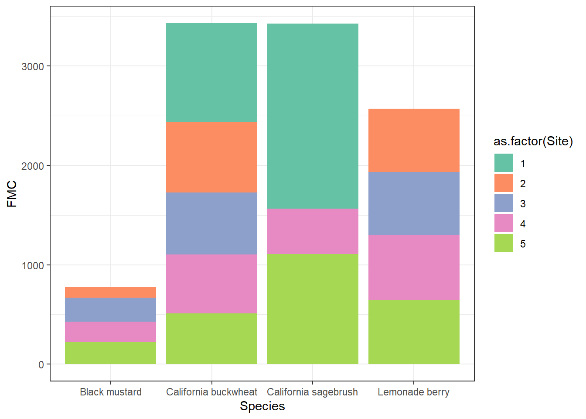
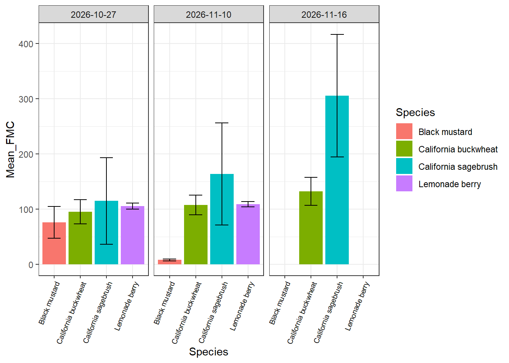
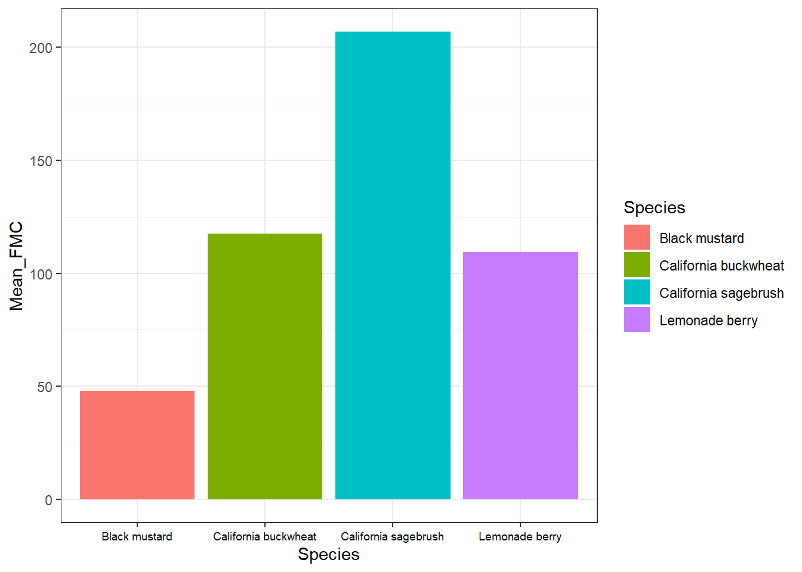
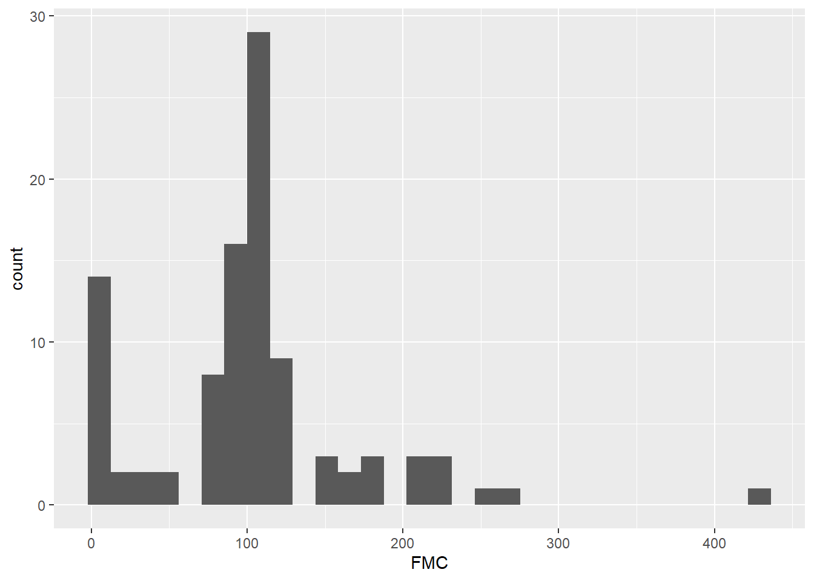
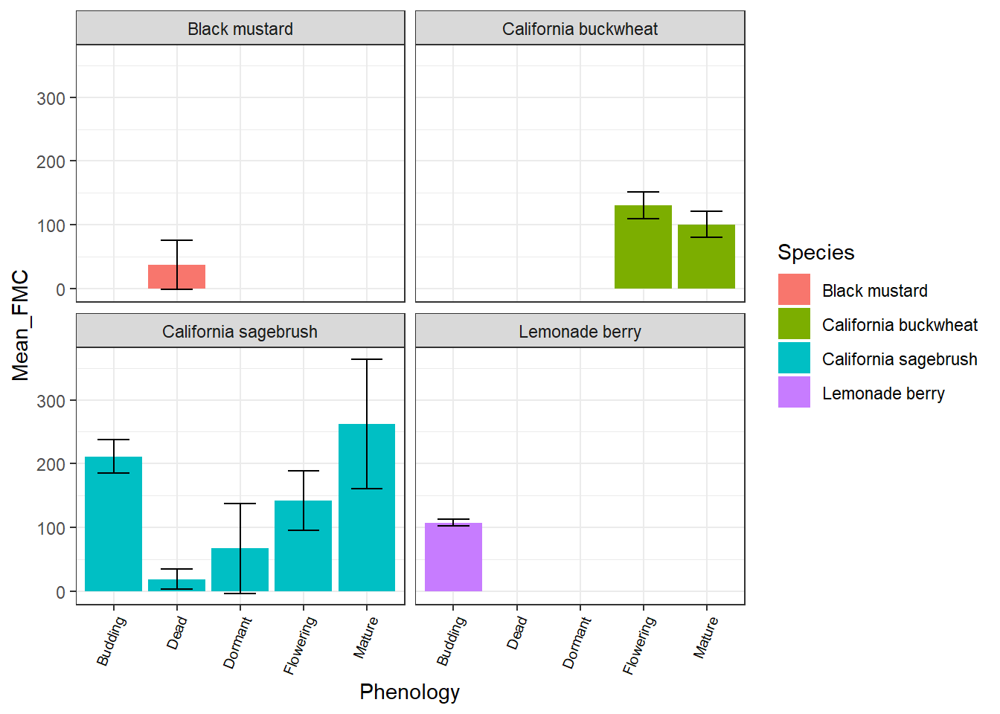

! Using an auto-discovered, cached token.
To suppress this message, modify your code or options to clearly consent to
the use of a cached token.
See gargle's "Non-interactive auth" vignette for more details:
<https://gargle.r-lib.org/articles/non-interactive-auth.html>
ℹ The googlesheets4 package is using a cached token for 'slillywh@uci.edu'.
Auto-refreshing stale OAuth token.
✔ Reading from "IGNITE Data Sheet".
✔ Range "'RCoding'".
Data is already really clean, will save the chunk below in case of data cleaning
#data cleaning here!#There is one reading of black mustard that is 600 FMC, will take that outIGNITE_Data_Sheet_2 <- IGNITE_Data_Sheet |>filter(Sample_ID !="2_BRNI_261027_1", Sample_ID !="3_BRNI_261027_1" , Sample_ID !="4_BRNI_261027_3")|>mutate(Site =as.factor(Site))
Exploratory Data Graphing
ggplot(IGNITE_Data_Sheet_2) +aes(x = Species, y = FMC, fill =as.factor(Site)) +geom_col()+scale_fill_brewer(palette ="Set2")+theme_bw()

ggplot(IGNITE_Data_Sheet_2)+aes(x = Species, y = Wet_Mass)+geom_boxplot()+theme_bw()
ggplot(IGNITE_Data_Sheet_2)+aes(x = Species, y = Dry_Mass)+geom_boxplot()+theme_bw()
`summarise()` has regrouped the output.
ℹ Summaries were computed grouped by Species and Site.
ℹ Output is grouped by Species.
ℹ Use `summarise(.groups = "drop_last")` to silence this message.
ℹ Use `summarise(.by = c(Species, Site))` for per-operation grouping
(`?dplyr::dplyr_by`) instead.
ggplot(IGNITE_Summary) +aes(x = Species, y = Mean_FMC, fill = Species)+geom_col(position ="dodge")+geom_errorbar(aes(ymin = Mean_FMC - sd_FMC, ymax = Mean_FMC + sd_FMC, width =0.5))+facet_wrap(Site~.)+theme_bw()+theme(axis.text.x =element_text(angle =68, hjust =1, size =7, color ="black"))
`summarise()` has regrouped the output.
ℹ Summaries were computed grouped by Species and Date.
ℹ Output is grouped by Species.
ℹ Use `summarise(.groups = "drop_last")` to silence this message.
ℹ Use `summarise(.by = c(Species, Date))` for per-operation grouping
(`?dplyr::dplyr_by`) instead.
IGNITE_Summary_Sampling_Dates
# A tibble: 10 × 4
# Groups: Species [4]
Species Date Mean_FMC sd_FMC
<chr> <dttm> <dbl> <dbl>
1 Black mustard 2026-10-27 00:00:00 75.9 28.8
2 Black mustard 2026-11-10 00:00:00 7.85 1.66
3 California buckwheat 2026-10-27 00:00:00 94.9 21.8
4 California buckwheat 2026-11-10 00:00:00 107. 18.1
5 California buckwheat 2026-11-16 00:00:00 132. 25.7
6 California sagebrush 2026-10-27 00:00:00 115. 78.5
7 California sagebrush 2026-11-10 00:00:00 164. 92.4
8 California sagebrush 2026-11-16 00:00:00 306. 111.
9 Lemonade berry 2026-10-27 00:00:00 106. 5.46
10 Lemonade berry 2026-11-10 00:00:00 109. 4.93
ggplot(IGNITE_Summary_Sampling_Dates) +aes(x = Species, y = Mean_FMC, fill = Species)+geom_col(position ="dodge")+geom_errorbar(aes(ymin = Mean_FMC - sd_FMC, ymax = Mean_FMC + sd_FMC, width =0.5))+facet_wrap(Date~.)+theme_bw()+theme(axis.text.x =element_text(angle =68, hjust =1, size =7, color ="black"))

Interesting differences between the two dates
ggplot(IGNITE_Summary) +aes(x = Species, y = Mean_FMC, fill = Species)+geom_col(position ="dodge")+theme_bw()+theme(axis.text.x =element_text(size =7, color ="black"))

#combined results so far
Mustard’s numbers are inflated due to having little to 0 wet mass
`stat_bin()` using `bins = 30`. Pick better value `binwidth`.

IGNITE_Data_Sheet_3 <- IGNITE_Data_Sheet_2 |>filter(Sample_ID !="1_ARCA_261116_3")#Data does not look that normal, will proceed#FMC_model <- lmer(FMC ~ Species + Phenology + Percent_Green + (1 | Site/Bottle_ID) + (1| Date), data = IGNITE_Data_Sheet_2)#Boundary error, let me see what I can drop#summary(FMC_model)#VarCorr(FMC_model)#Site and Bottle ID was causing the issue, will drop it for now...FMC_model <-lmer(FMC ~ Species + Phenology + Percent_Green + (1| Date), data = IGNITE_Data_Sheet_3)#Perfect, it no longer pops uphist(residuals(FMC_model))
`summarise()` has regrouped the output.
ℹ Summaries were computed grouped by Species and Phenology.
ℹ Output is grouped by Species.
ℹ Use `summarise(.groups = "drop_last")` to silence this message.
ℹ Use `summarise(.by = c(Species, Phenology))` for per-operation grouping
(`?dplyr::dplyr_by`) instead.
ggplot(IGNITE_Summary_Phenology) +aes(x = Phenology, y = Mean_FMC, fill = Species)+geom_col(position ="dodge")+geom_errorbar(aes(ymin = Mean_FMC - sd_FMC, ymax = Mean_FMC + sd_FMC, width =0.5))+facet_wrap(Species~.)+theme_bw()+theme(axis.text.x =element_text(angle =68, hjust =1, size =7, color ="black"))

#Makes sense since flowering is a new phenology type#Also it makes sense with the variation between dead and dormant for the Sd